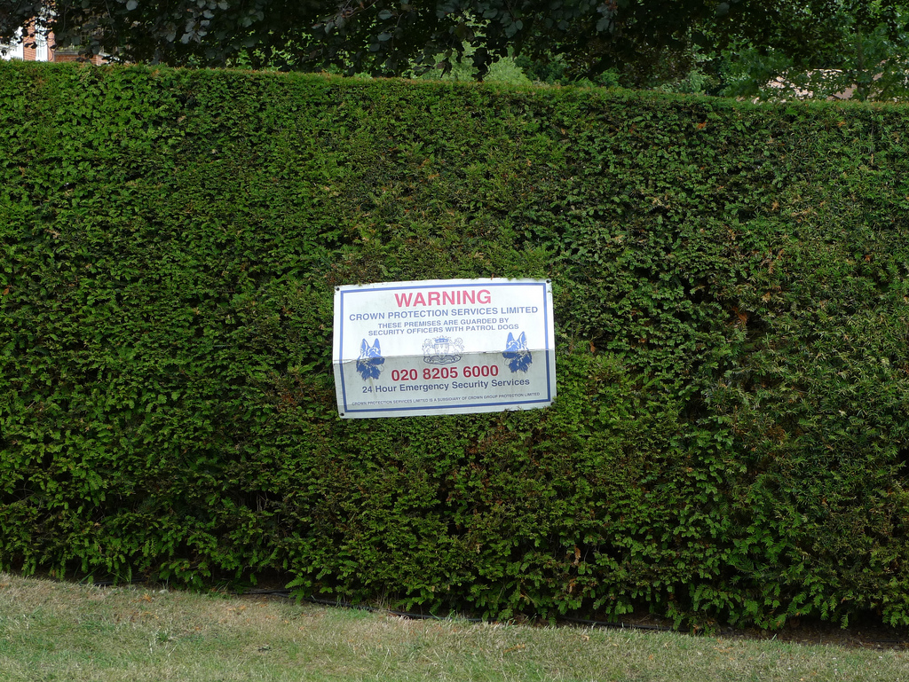
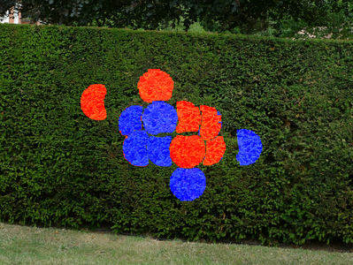
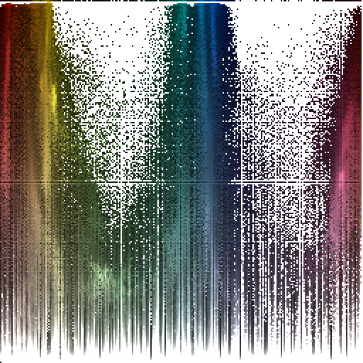
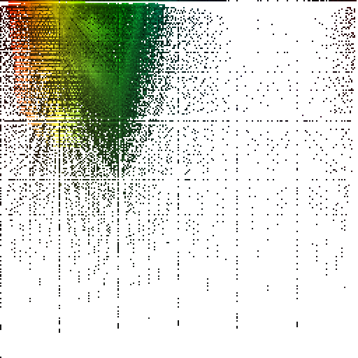
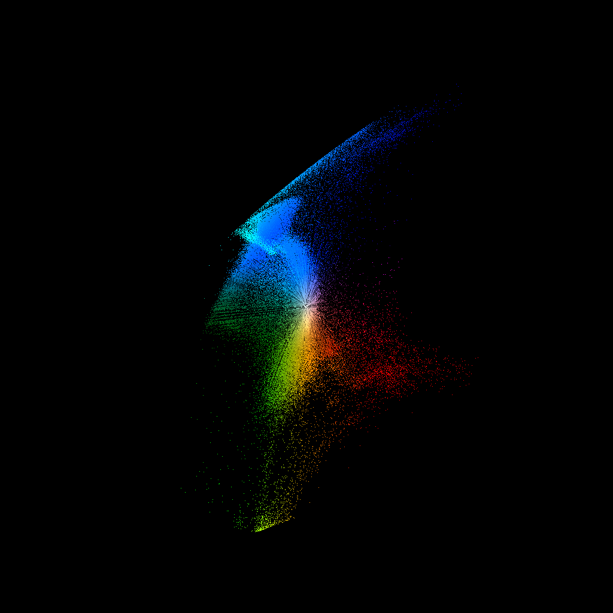
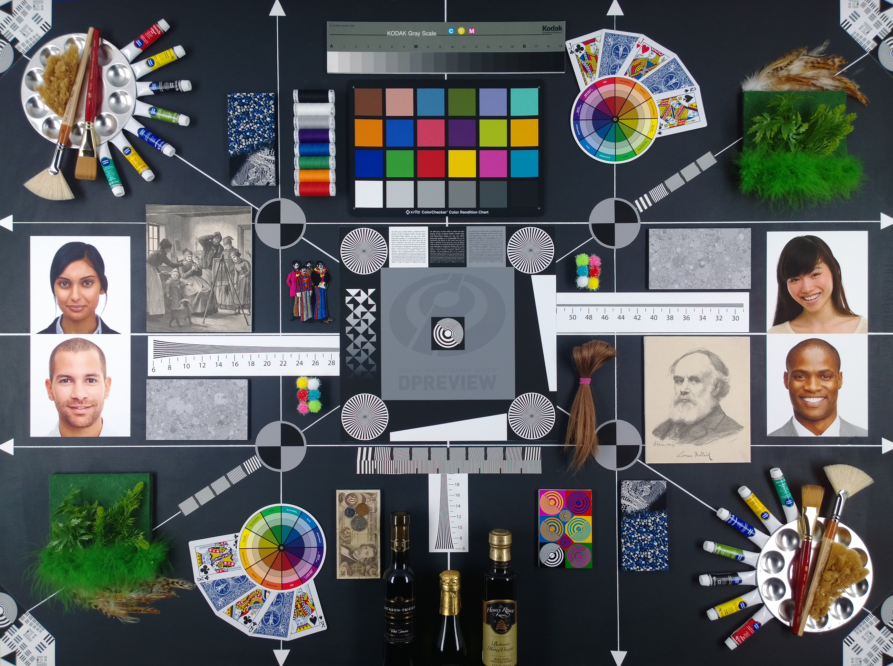

Clone Detection
Clone Detection

Clone Detection
Error Level Analysis
+ |
Error Level Analysis
Error Level Analysis
Color Spaces
HSV
 |
 |
HSV
|  |
LAB
LAB
Up Down Curve
Up Down Curve
Up Down Curve

Exif Data
Exif Data
- Read: exiftool nokia_1020.jpg
- Delete:
mogrify -strip nokia_1020.jpg
jhead -purejpg nokia_1020.jpg
Quantization
Tool: jpegqual from GIMP
|
Quality |
Sampling |
Q. tables |
Source |
|
|---|---|---|---|---|
|
Nokia 1020 |
95 (exact) |
2x2 |
2 |
IJG JPEG Library - quality 95 |
|
Sony K750 |
85 (approx) |
2x1 |
2 |
SonyEricsson K750i |
|
GIMP |
98 (exact) |
2x2 |
2 |
IJG JPEG Library - quality 98 |
|
Adobe CS2 |
94 (approx) |
1x1 |
2 |
Adobe Photoshop CS2 - quality 10 |